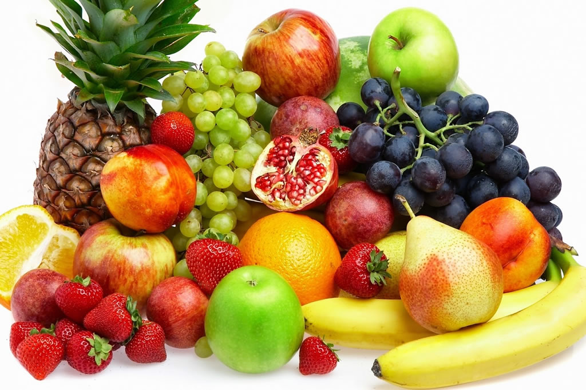
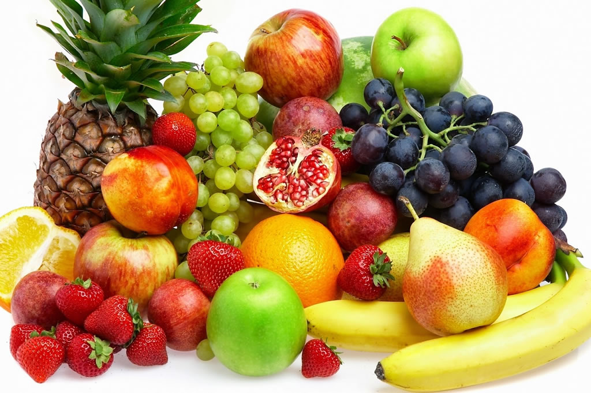
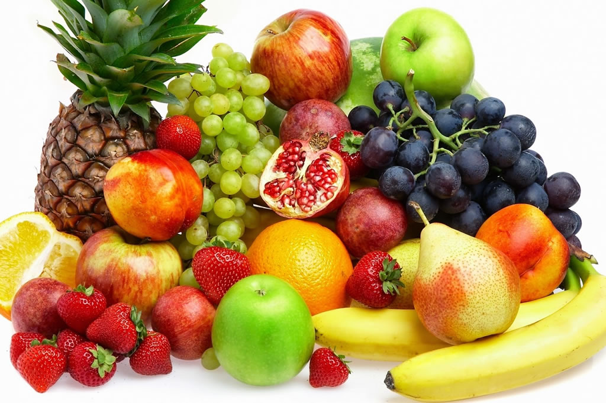
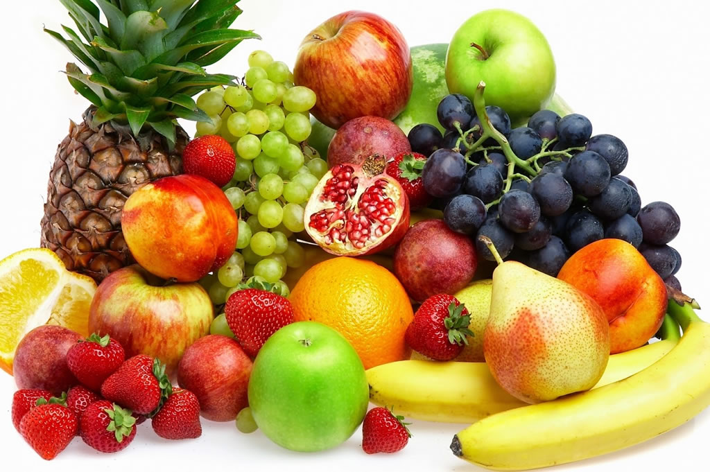

In botany, a fruit is the seed-bearing structure in flowering plants (also known as angiosperms)
formed from the ovary after flowering.
Fruits are the means by which angiosperms disseminate seeds. Edible fruits, in particular, have propagated
with the movements of humans and animals in a symbiotic relationship as a means for seed dispersal and nutrition;
in fact, humans and many animals have become dependent on fruits as a source of food. Accordingly, fruits account
for a substantial fraction of the world's agricultural output, and some (such as the apple and the pomegranate) have
acquired extensive cultural and symbolic meanings.
In common language usage, "fruit" normally means the fleshy seed-associated structures of a plant that are sweet or
sour, and edible in the raw state, such as apples, bananas, grapes, lemons, oranges, and strawberries. On the other
hand, in botanical usage, "fruit" includes many structures that are not commonly called "fruits", such as bean pods,
corn kernels, tomatoes, and wheat grains. The section of a fungus that produces spores is also called a fruiting body.
(Source: Fruit-Wikipedia)
| Country | Production in Million Metric Tons |
|---|---|
| China, mainland | 240.75 |
| India | 98.72 |
| Brazil | 40.05 |
| United States | 26.02 |
| Turkey | 23.6 |
| Mexico | 22.77 |
| Indonesia | 20.44 |
| Spain | 19.33 |
| Iran | 18.9 |
| Italy | 18.01 |